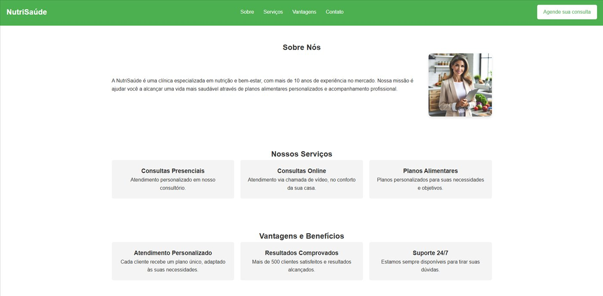
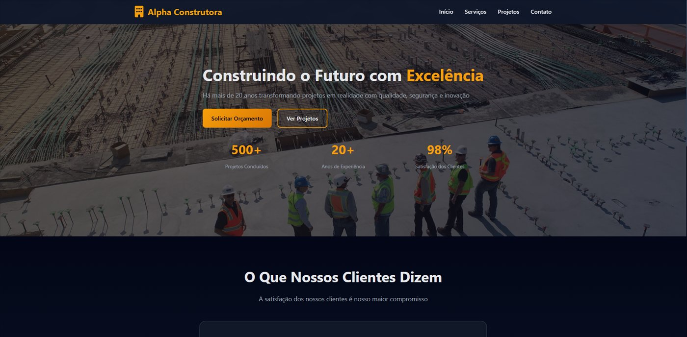
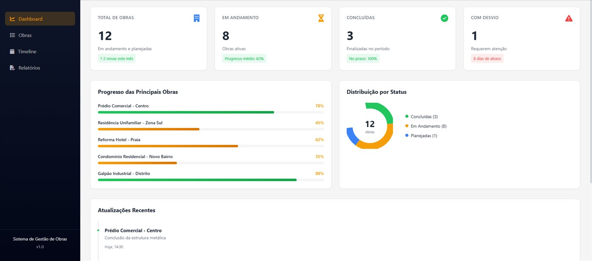
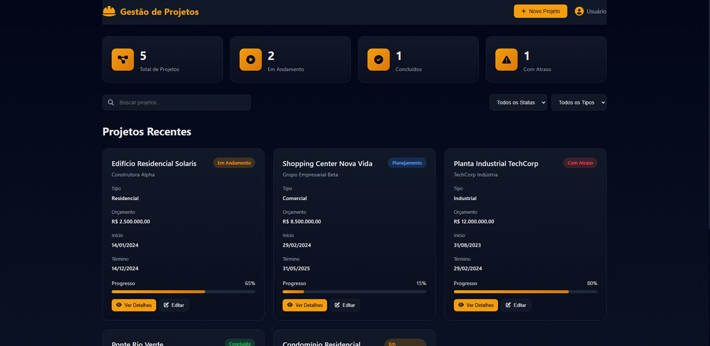

9 projetos exibidos.
AWS Textract
- Problema
- Extrair texto de documentos e imagens sem transcrição manual.
- Solução
- Experimento em Python integrado ao AWS Textract para reconhecimento de texto.
- Evidência
- Código-fonte público para análise e reprodução técnica.
Python • AWS Textract • Automação
Ver no GitHub
AWS Rekognition
- Problema
- Analisar automaticamente o conteúdo de imagens.
- Solução
- Script Python com Boto3 e AWS Rekognition, usando imagens locais e credenciais configuradas.
- Evidência
- Pré-requisitos e código disponíveis no repositório público.
Python • AWS Rekognition • Visão Computacional
Ver no GitHub
Integrações Azure
- Problema
- Validar números de CPF por meio de uma interface HTTP.
- Solução
- Azure Function em Python com gatilho HTTP e estrutura de configuração reproduzível.
- Evidência
- Implementação enxuta publicada no GitHub.
Python • Azure Functions • HTTP
Ver no GitHub

NutriSaúde
- Problema
- Apresentar serviços de nutrição de forma acolhedora e acessível em dispositivos móveis.
- Solução
- Landing page responsiva construída com HTML, CSS e Flexbox.
- Resultado verificável
- Aplicação publicada no Netlify e código-fonte disponível.
HTML • CSS • Responsive • SEO
Ver no GitHub
Abrir demonstração
Projeto Podcast
- Problema
- Produzir um episódio temático de podcast com roteiro, vozes, áudio e identidade visual.
- Solução
- Fluxo documentado com ferramentas de IA para roteiro e voz, além de edição no CapCut.
- Evidência
- Processo, ferramentas e materiais descritos no README público.
Roteiro • IA de voz • Edição de áudio • Design
Ver no GitHub
Nikola Tesla
- Problema
- Explicar o Sistema Mundial Sem Fio de Nikola Tesla de forma clara e envolvente.
- Solução
- Site educacional responsivo com conteúdo técnico, modais, áudio e animações.
- Evidência
- Documentação detalhada e implementação completa no repositório.
HTML • CSS • JavaScript • Design UX
Ver no GitHub
Identificador de Bandeira de Cartão
- Problema
- Verificar a validade matemática de um número de cartão e identificar sua bandeira.
- Solução
- Aplicação Python baseada no algoritmo de Luhn e em padrões de prefixos.
- Evidência
- Exemplos de execução, limitações e código documentados no repositório.
Python • Algoritmo de Luhn • Validação
Ver no GitHub




Imagem 1 de 4
Portfólio Empresarial
- Problema
- Demonstrar soluções digitais para comunicação e gestão no setor de construção civil.
- Solução
- Conjunto de protótipos: site institucional, painel de obras e sistema de gestão de projetos.
- Resultado verificável
- Capturas funcionais, documentação e código-fonte disponíveis neste portfólio e no GitHub.
HTML • CSS • JavaScript • Dashboard • Gestão
Ver no GitHub
Visualizar MVP online
Trilha .NET Fundamentos
- Problema
- Gerenciar entrada, saída, cobrança e listagem de veículos em um estacionamento.
- Solução
- Aplicação de console em C# desenvolvida no desafio de fundamentos .NET da DIO.
- Evidência
- Requisitos, diagrama de classe e solução publicados no repositório.
C# • .NET • Orientação a objetos • Console
Ver no GitHub